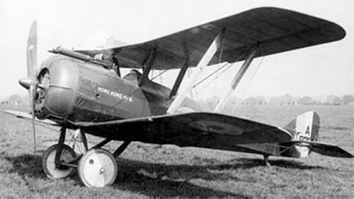

D.H.5

- Разработчик: Airco
- Страна: Великобритания/li>
- Первый полет: 1917
- Тип: Истребитель-разведчик
Какие бы недостатки не были присущи самолетам D.H.1 и D.H.2, их конфигурация с толкающим винтом гарантировала пилотам великолепный
обзор. Когда синхронизирующие механизмы позволили устанавливать пулеметы для стрельбы через винт, из-за ухудшегося обзора выгода
этой конструкции значительно снизилась. В 1916г. для замены D.H.2, был сконструирован самолет фирмы Airco (Aircraft Manufacturing
Co. Ltd) D.H.5, являвшийся первым истребителем-разведчиком конструкции Де Хэвилленда, имевшим синхронизатор Константинеско.
Это был цельнодеревянный одностоечный биплан с полотняной обшивкой.
Хотя машина с тянущим винтом предполагала намного лучшие летные характеристики, Джеффри Де Хэвилленд попытался компенсировать
появившийся по сравнению с самолетом D.H.2 недостаток. Для улучшения обзора одно крыло биплана было значительно смещено назад
относительно другого, что позволяло пилоту располагаться перед передней кромкой верхнего крыла. Самолет имел в основном деревянную
и полотняную конструкцию, шасси с хвостовым костылем и ротативный двигатель Le Rhоne мощностью 110л.с.
Самолеты D.H.5 поступили в эксплуатацию в ВВС Великобритании в мае 1917г. Но их характеристики управляемости и летные данные
на большой высоте уступали многим самолетам союзников и вражеским самолетам, что делало их очень уязвимыми в неопытных руках.
После больших потерь в ноябре 1917г., самолеты D.H.5 стали использоваться чаще для атак на наземные цели до тех пор, пока в 1918г
. не были заменены самолетами S.E.5a, изготовленными на Королевском авиационном заводе. Очень короткий период самолеты D.H.5
использовались в качестве тренировочных. Всего было выпущено около 550 самолетов D.H.5, из них 200 построила компания Airco.
Для экспериментальных целей на один экземпляр был установлен ротативный двигатель Clerget мощностью 110 л.с.
D.H.5 не пользовался популярностью у пилотов. Он был весьма неустойчив на рулежке, сложен в пилотировании, с трудом набирал высоту
и легко терял ее в бою. Положительными качествами истребителя считалась высокая прочность конструкции и хороший обзор,
обусловленный обратным выносом верхнего крыла.
| Летно технические характеристики | |
|---|---|
| Модификация | D.H.5 |
| Размах крыла, м | 7.82 |
| Длина, м | 6.71 |
| Высота, м | 2.78 |
| Масса, кг | |
| - пустого самолета | 458 |
| - нормальная взлетная | 677 |
| Тип двигателя | 1 ПД Le Rh ne 9J |
| Мощность, л.с. | 1 х 110 |
| Максимальная скорость , км/ч | 164 |
| Крейсерская скорость , км/ч | 148 |
| Продолжительность полета, ч.мин | 2.45 |
| Максимальная скороподъемность, м/мин | 285 |
| Практический потолок, м | 4875 |
| Экипаж, чел | 1 |
| Вооружение: | один 7.7-мм пулемет Vickers бомбовая нагрузка - 11,3 кг на подкрыльных бомбодержателях |